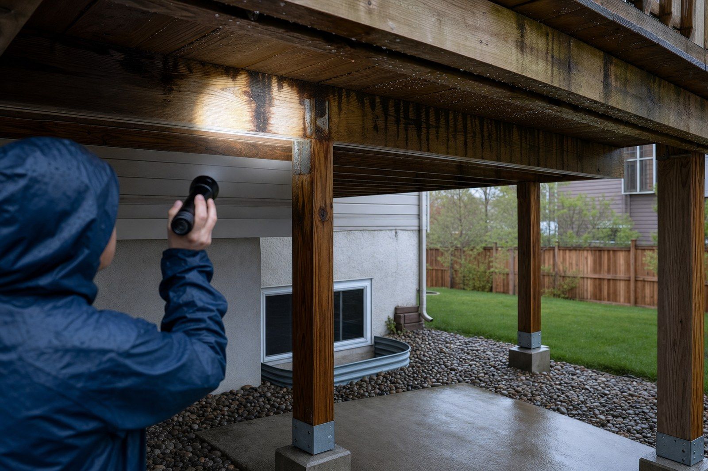

Almost every homeowner shopping for a deck drainage system is asking the same practical question: I already have a deck, can I keep the space underneath dry without tearing it out? The honest answer is that you can keep the space dry, but there is a hard limit to what any retrofit can do for the deck itself. That limit is not a marketing point, it is physics. Once the boards are down, the top of your framing is exposed to weather for the rest of the deck's life. A retrofit works with that reality. It does not undo it.
The retrofit path: below-joist systems
Every product that can be added to an existing deck lives in the same general family. A tray, panel, or flexible membrane is installed underneath the joists, sloped toward one side, and drained away with a gutter. Water still falls through the gaps between your deck boards, still lands on the tops of the joists, still runs down the sides of the framing. The retrofit catches it below the framing and moves it away from the space you want to use. The patio, hot tub area, or storage below stays dry. The framing does not.
Retrofits vary in price and finish. Corrugated aluminum panels are the most common budget option. Vinyl or PVC ceiling systems give a cleaner finished look with integrated lighting channels. Fabric membranes sag into shallow troughs between joists. All of them share the same architectural role: they are a ceiling for the space below, not a raincoat for the deck above.
A below-joist retrofit protects the space under your deck. It does not protect the deck.
What a retrofit will not fix
The reason most decks fail is not a single flood. It is the wet-dry cycle running through hundreds of storms. Water sits on top of the joists in the shaded pocket between deck boards, the wood dries slowly, and the next rain wets it before it has finished drying. Fasteners in that same pocket corrode. The ledger board holds water where the deck attaches to the house. None of that changes when you hang a tray underneath. If your framing is already going through that cycle today, a retrofit will not slow it down. We walk through the mechanism in why decks rot from the top down.
When a below-joist retrofit is the right call
Retrofits earn their keep in a specific scenario. Your framing is still structurally sound, your deck boards have real life left in them, and what you actually want is to use the ground-level space below. In that case, adding a below-joist system is the fastest path to a dry patio without a full rebuild. You keep the deck you have, you gain a covered outdoor room, and you accept that the framing will keep aging on its normal timeline.
Good fit for a retrofit
- Framing is sound with no soft joists or rust bleed
- Deck boards have several good years left
- Main goal is a dry, usable patio underneath
- Full rebuild is not in the near-term budget
- You accept the framing will age normally
Not a good fit
- Joists are soft, cracked, or already rotting
- Ledger flashing has separated from the house
- Fasteners are corroded or bleeding rust
- You are planning a rebuild within a few years
- You want the deck itself to last decades
How to inspect before you spend
Before you commit money to a retrofit, take twenty minutes with a flashlight and a screwdriver. On a dry day, walk underneath and look at the tops of the joists where they meet the boards. Press the screwdriver into any dark or discolored spots. Sound wood pushes back. Rotted wood accepts the tip with almost no pressure. Check the joist hangers and lag bolts for rust bleed, the vertical streaks that show water has been sitting on the metal for years. Look at the ledger flashing where the deck meets the house. If the flashing is loose, curled, or missing, water has been running behind the deck into your rim joist for a long time. Any of those findings changes the math. Spending on a retrofit over a structure that is already failing is spending twice.
When to build new instead
If the inspection turns up trouble, or if a rebuild is already on your horizon, the calculus flips. New construction is the one moment where you can put the water barrier at the surface, not underneath. An above-joist seal sits in the gap between each deck board and closes it to rain, so water runs across the top of the deck and sheds off the edge. The framing below stays dry. The wet-dry cycle never starts. The full comparison is in the above-joist vs below-joist buyer's guide.
AmeriDex is the above-joist version of this. The deck surface is built from cellular PVC deck boards with a proprietary ASA cap, and every board locks onto a Dexerdry seal, an automotive-grade TPE component, as the deck is assembled. The complete AmeriDex Dryspace System is the boards and the Dexerdry component working together, and it carries a 25-year residential and 10-year commercial warranty on both. That is the coverage you cannot get with a retrofit, because a retrofit does not touch the two things that actually control how long a deck lasts.
Retrofit if the deck has life left and you just want the space underneath. Rebuild with an above-joist seal if the framing is compromised or a replacement is on the way, because that is the only moment when the water barrier can go where it actually matters.
Three questions to answer before you decide
- Is the framing still sound? A retrofit only makes sense over a structure that will outlast the retrofit itself.
- What am I actually trying to protect? The space, the structure, or both. That answer alone tells you which side of the framing the water barrier needs to be on.
- What is my time horizon? If you plan to rebuild in three to five years anyway, retrofit money is money you spend twice.
If you are leaning toward a rebuild, request free samples to see and feel the deck boards and the Dexerdry seal, and start a free quote to size the system for your project. If you want the deeper mechanics first, how the system works shows the boards and seal in detail.